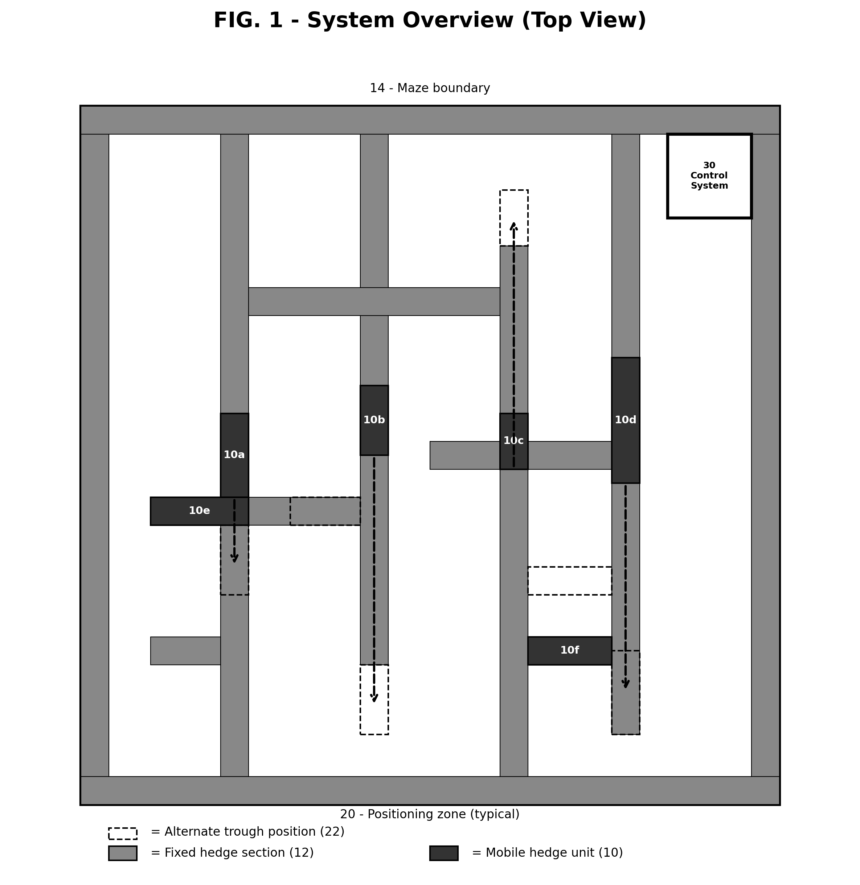
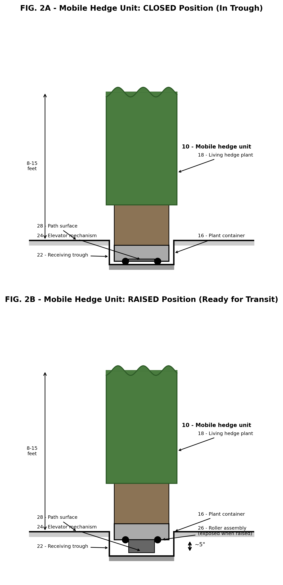
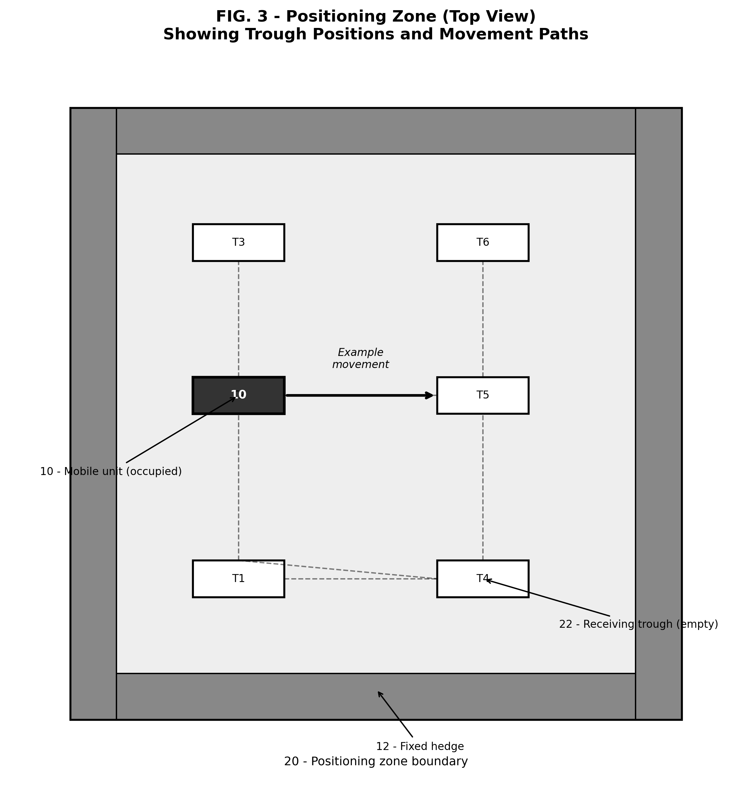
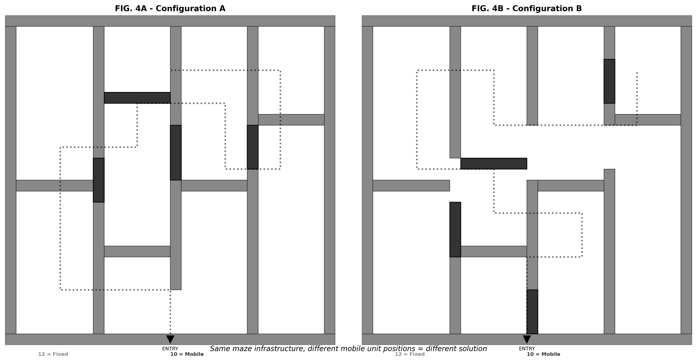
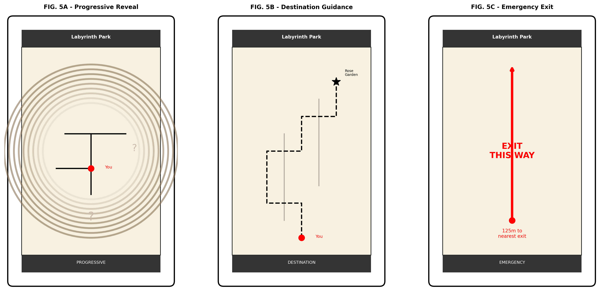
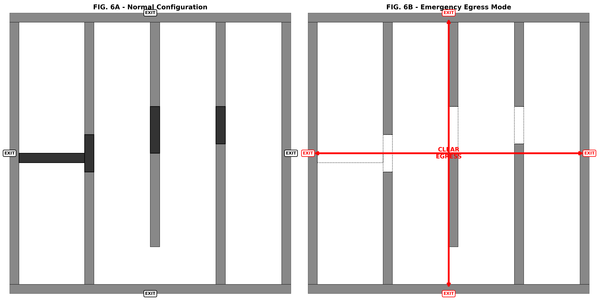
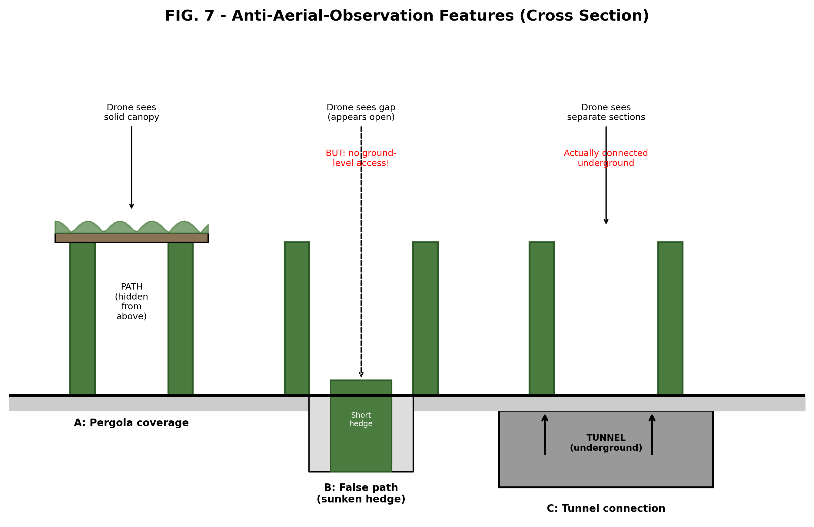
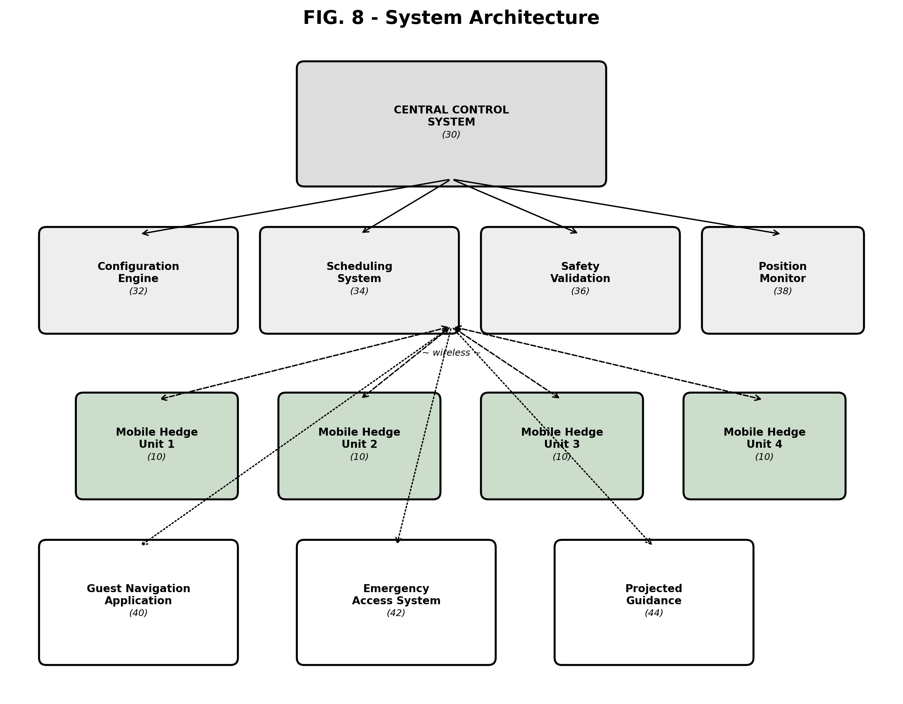

[Jon Burchel - to be completed on filing]
[To be filed at USPTO.gov]
Universal Modular Living Landscape Infrastructure Platform and Method
None.
The present invention relates to modular outdoor landscape infrastructure systems, and more particularly to a universal platform comprising recessed channel grids, mobile living plant containers, modular utility docking, hydroponic irrigation, and autonomous reconfiguration control for applications including but not limited to reconfigurable mazes, privacy screening, event routing, decorative partitioning, environmental buffering, crowd management, and managed public-space operations.
Traditional hedge mazes and labyrinths, such as those found at Hampton Court Palace, the Chateau de Versailles, and various botanical gardens, are static structures. Once planted and grown, their paths and walls remain fixed. Visitors who solve the maze once have no reason to return, as the experience is identical on subsequent visits. Modifications to traditional hedge mazes require years of plant growth and significant horticultural labor.
Prior art in reconfigurable mazes has focused on indoor amusement applications using artificial walls, including hydraulically lifted columns (U.S. Pat. No. 6,855,062), pivoting wall panels (U.S. Pat. No. 6,675,538), and water-jet walls (U.S. Pub. No. 2015/0024856). These systems are limited to indoor or controlled environments, use artificial materials rather than living plants, operate at small scales, and do not integrate with guest navigation or scheduling systems.
There exists a need for a large-scale outdoor maze system that uses living plants to maintain the aesthetic and experiential qualities of a traditional hedge maze while providing continuous reconfigurability, autonomous operation, and integration with digital guest experience systems.
The present invention provides a system and method for creating a continuously reconfigurable outdoor labyrinth comprising a plurality of living plant containers mounted on motorized transport platforms. Each platform operates within a bounded positioning zone on a prepared surface, repositioning autonomously according to algorithmic scheduling to create new maze configurations. The system integrates with a guest navigation application and emergency management systems.
The invention achieves a maze that is visually and experientially indistinguishable from a traditional planted hedge maze, while being capable of producing a functionally infinite number of unique configurations through the combinatorial repositioning of its movable sections.
In broader embodiments, the invention is not limited to maze applications and may be implemented as a universal modular living landscape infrastructure platform for configurable screening, circulation control, privacy, event routing, decorative partitioning, environmental buffering, and managed public-space operations. The same recessed-channel, mobile-planter, docking, and control architecture may serve as a general-purpose landscape operating system across hospitality, civic, entertainment, security, transportation, and institutional sites.
The number of unique maze configurations grows combinatorially with the number of mobile hedge units and their available positions. For a system with N mobile hedge units, each operable in P discrete positions within its positioning zone:
Example configurations for representative system sizes:
At a reconfiguration rate of one new configuration per day, a system of 60 mobile units with 20 open at any time would require approximately 1.3 x 10^25 years to exhaust all unique configurations, a duration exceeding the estimated age of the universe (1.4 x 10^10 years) by a factor of approximately 10^15. The system therefore produces a practically infinite variety of visitor experiences from a finite physical installation.
The reconfigurable living landscape maze system comprises the following primary components:
a) A plurality of mobile hedge units, each comprising a living plant container mounted on a motorized transport platform;
b) A network of prepared positioning surfaces (positioning zones) distributed throughout the maze footprint;
c) A central control system that commands the positioning of mobile hedge units according to programmable schedules;
d) An optional guest navigation system that provides wayfinding information adapted to the current maze configuration;
e) An optional emergency access system that can simultaneously reposition all mobile hedge units to create clear egress paths.
Each mobile hedge unit comprises:
2.1 Plant Container. A durable container (preferably precast concrete, composite, or heavy-gauge metal) of sufficient size to support a mature hedge specimen. Typical dimensions are 6-12 feet in length, 3-6 feet in width, and 3-5 feet in depth, sized to support hedge plants of 8-15 feet in height. The container includes integrated irrigation connections, drainage, and soil volume sufficient for multi-year plant health without transplanting.
2.2 Plant Material. Living hedge plants of species suitable for the regional climate and capable of tolerating periodic repositioning. Suitable species include but are not limited to: Thuja standishii x plicata (Green Giant Arborvitae), Ilex x 'Nellie R. Stevens' (Nellie Stevens Holly), Fagus sylvatica (European Beech), Taxus baccata (English Yew), Buxus sempervirens (Common Boxwood), and Prunus laurocerasus (Cherry Laurel). Plants are maintained at heights of 8-15 feet to create opaque visual barriers when viewed from ground level.
2.3 Trough-and-Elevator Mechanism (Preferred Embodiment). In the preferred embodiment, each mobile hedge unit operates using a trough-and-elevator system:
Receiving trough: A concrete channel (trough) is set into the path surface at each position where a mobile hedge unit may rest. The trough is sized to receive the base of the plant container such that when the container is lowered into the trough, the bottom edge of the hedge plant meets the surrounding ground level seamlessly. When the trough is unoccupied, it presents as a drainage channel or expansion joint in the paving, indistinguishable from normal landscape infrastructure.
Elevator mechanism: Each mobile hedge unit includes an integrated vertical lift mechanism (scissor jack, pneumatic cylinder, cam mechanism, or similar) capable of raising the plant container approximately 3-6 inches (preferably 5 inches) above the trough rim. This lift height is sufficient to expose a roller or wheel assembly beneath the container base, clearing the trough walls and allowing horizontal movement along the path surface.
Roller/wheel assembly: Concealed beneath the plant container base, exposed only when the elevator mechanism is in the raised position. Comprises powered wheels (electric drive motors) capable of self-propelled movement along the prepared path surface between trough positions. Wheels are rubber or polyurethane for smooth, quiet operation on concrete or paved surfaces.
Operating sequence:
OPEN (path clear): Vacated trough remains in path surface, appearing as drainage channel or expansion joint. Pedestrians walk over it without obstruction.
Locking mechanisms: Mechanical pins, electromagnetic brakes, or detent systems engage when the container is lowered into a trough, securing it against wind loads, accidental contact, or unauthorized movement.
2.4 Alternative Transport Mechanism. In alternative embodiments, the plant container may be mounted on a continuously wheeled or tracked platform as described: The plant container is mounted on a powered wheeled or tracked platform capable of self-propelled movement along the prepared positioning surface. The platform includes:
2.5 Self-Leveling Suspension System. Because outdoor path surfaces may exhibit minor irregularities (settling, frost heave, root intrusion, natural grade variations), each mobile hedge unit includes a self-leveling suspension system:
2.6 Irrigation Integration. Each mobile hedge unit includes flexible or quick-connect irrigation fittings that allow the unit to connect to water supply at any of its discrete positions within its positioning zone. In the trough-and-elevator embodiment, irrigation supply connections may be integrated into the trough base, automatically engaging when the container is lowered into position. Alternatively, the unit carries an onboard water reservoir sufficient for operation between scheduled irrigation connections.
2.7 Drive and Mobility Specifications. Each mobile hedge unit's drive system is sized for its planter weight class. Representative specifications for a medium-weight hydroponic unit (approximately 4,300 lbs):
2.8 Root Management Assembly. Each planter may include a root-management assembly comprising air-pruning surfaces, guided-root ribs, root-turning baffles, removable root-access panels, or a replaceable inner root cartridge that reduces circling-root formation during long-term container use. The control system may assign each planter a root-service interval and autonomously route the planter to a service bay for root pruning, division, media refresh, or containerized rejuvenation before decline becomes externally visible.
2.9 Canopy Separation and Root Bridging Prevention. Adjacent planters may include canopy-separation features that preserve a controlled seam between neighboring hedge masses, including spacer fins, sacrificial trim zones, retractable comb structures, pruning guides, or temporary spreader members used during growth management. Docking interfaces, drainage openings, and sub-channel couplers may further include root-impermeable barriers, intrusion-resistant sleeves, and serviceable anti-bridge seals that prevent roots from crossing between planters or entering shared infrastructure.
2.10 Degraded-Mobility Support. Each mobile unit may include a degraded-mobility support structure comprising sacrificial skid pads, auxiliary landing shoes, emergency casters, or a three-point backup load path that prevents excessive list or structural binding upon wheel, bearing, or suspension failure. Upon detection of abnormal vibration, temperature, or ride-height asymmetry, the unit may enter a reduced-speed limp mode to reach the nearest serviceable docking position or await assisted recovery while remaining upright and stable.
Each mobile hedge unit operates within a bounded positioning zone comprising:
3.1 Surface. A load-bearing prepared surface (reinforced concrete slab, compacted aggregate with paving, precast concrete panels, permeable pavers, stabilized gravel, or similar) capable of supporting the fully loaded weight of the mobile hedge unit (estimated 2,000-10,000 lbs depending on container size and plant maturity). The surface between trough positions should be generally level but need not be perfectly smooth; the self-leveling suspension system (Section 2.5) compensates for surface irregularities of up to 1 inch in any direction. This allows the use of natural-looking outdoor path surfaces (flagstone, brick, textured concrete, compacted gravel) rather than requiring polished indoor-grade flooring, preserving the aesthetic of an outdoor garden environment.
3.2 Trough Positions (Preferred Embodiment). Concrete troughs are set into the path surface at each position where a mobile hedge unit may rest. Each trough is:
3.3 Guidance Infrastructure. One or more of the following embedded in or on the positioning surface to guide units between trough positions:
3.4 Discrete Positions. Each positioning zone provides a plurality of discrete trough positions (preferably 4-12 positions) at which the mobile hedge unit may be secured. Positions are arranged in a grid, radial, linear, or custom pattern suited to the local maze geometry. The spacing between positions is sufficient to create meaningfully different path configurations when the unit is repositioned (typically 3-20 feet between adjacent positions).
3.5 Flush Integration. The positioning surface, including all troughs and guidance infrastructure, is designed to be flush with surrounding pedestrian path surfaces. Unoccupied troughs and guidance channels are not readily identifiable as maze infrastructure by casual observation, appearing instead as standard landscape drainage or paving features.
A computerized central control system manages the configuration of the maze by commanding the positions of all mobile hedge units. The control system comprises:
4.1 Configuration Engine. Software that generates, stores, and schedules maze configurations. Configurations may be generated by:
4.2 Scheduling System. Configurations are applied according to a programmable schedule (e.g., daily, weekly, event-triggered, seasonal). The system supports:
4.3 Safety Validation. Before executing any configuration change, the control system validates that:
4.4 Position Monitoring. The control system continuously monitors the reported position of each mobile hedge unit and alerts operators to any discrepancy between commanded and actual positions.
An optional guest-facing navigation application provides wayfinding adapted to the current maze configuration:
5.1 Real-Time Map. The application receives the current maze configuration from the central control system and generates a navigable map. The map may be presented to the guest in various modes:
5.2 Artistic Presentation. The map is presented in a hand-drawn, illustrated, or stylized aesthetic rather than a technical schematic, maintaining the experiential quality of the maze.
5.3 Position Tracking. Guest position within the maze is determined by smartphone GPS, Bluetooth beacons distributed throughout the maze, or similar indoor/outdoor positioning technology.
The system supports designating subsets of the maze as "closed" to visitors while remaining physically in place:
6.1 Open/Closed Designation. Each maze section (which may comprise one or more mobile hedge units and fixed hedge elements) can be designated as open or closed in the central control system. Closed sections are:
6.2 Rotation Scheduling. The control system supports scheduling the opening and closing of sections on independent cycles (e.g., weekly, biweekly, seasonal) to create a continuously changing visitor experience.
In an emergency (fire, medical, severe weather, security), the control system can execute a pre-programmed emergency configuration that:
Projectors mounted on poles, structures, or embedded in the ground project visual indicators onto hedge surfaces or path surfaces:
The system optionally incorporates features to prevent the maze configuration from being solved by aerial observation (drone, satellite, or elevated vantage point):
10.1 Wind-Load Stabilization. Each mobile hedge unit may include a wind-load stabilization system comprising one or more of: deployable outriggers, below-grade anchor engagement features integrated with the receiving trough, ballast compartments within the container base, retractable ground pins, and mechanical interlocks with the receiving trough walls. The control system may restrict movement or command a storm-secure position when measured or forecast wind speeds exceed a configurable threshold.
10.2 Severe-Weather Mode. The system may include a severe-weather mode in which mobile hedge units are autonomously repositioned into a protected storage arrangement, a low-sail-area orientation, or mutually braced clusters that reduce wind exposure and projectile risk. Severe-weather mode may be triggered by on-site weather sensors (anemometer, barometer, precipitation gauge), forecast data feeds, operator command, or utility outage detection.
10.3 Inter-Unit Coupling. Adjacent mobile hedge units may include inter-unit coupling features such as retractable pins, latches, magnetic couplers, or shared brace members that temporarily connect multiple units into a composite structure. Such coupling may increase resistance to crowd loads, wind loads, tampering, or misalignment in storm or high-traffic operating modes.
10.4 Freeze-Thaw and Ice Protection. Receiving troughs, drainage channels, lift interfaces, roller assemblies, and utility couplers may include freeze-protection features including resistive heating elements, hydronic warming loops, thermal insulation, low-point drains, and ice-detection sensors. The control system may suspend movement operations, preheat target positions, or route units to frost-protected docking locations when ambient or surface temperature conditions indicate freezing risk.
10.5 Drainage and Water Intrusion Management. Each receiving trough may incorporate a drainage management assembly comprising graded floors, sediment sumps, cleanout access ports, debris screens, overflow passages, and water-level sensing. The control system may inhibit lowering of a mobile hedge unit into a flooded or debris-filled trough and may command drainage, cleaning, or alternate positioning before seating.
11.1 Dynamic Safety Envelope. Each mobile hedge unit may define a dynamic safety zone around the unit and along its projected path using redundant presence-detection sensors including LIDAR, radar, machine vision, pressure-sensitive bumper edges, and ground-based occupancy sensing (pressure mats, infrared beams). If a person, animal, or object enters the safety zone, the unit shall decelerate, stop, issue audible and visual warnings, and await operator clearance, automatic rerouting, or zone-clear confirmation before resuming movement.
11.2 Redundant Braking and Fail-Safe Immobilization. The mobile hedge unit may include redundant braking systems comprising normally engaged spring-applied brakes, mechanical wheel locks, elevator-position locks, and seated-position latches that default to a secure (immobilized) state upon power loss, communication loss, or control fault detection. Release of any immobilization device shall require affirmative control authorization and successful verification of safe operating conditions.
11.3 Recovery Mode for Breakdown Mid-Transit. Each mobile hedge unit may include a recovery interface enabling manual towing, robotic rescue vehicle coupling, jack-and-skate relocation, or attachment to a dedicated service vehicle when the unit becomes immobilized between discrete trough positions. The control system may automatically designate exclusion zones around the disabled unit, compute substitute maze configurations that bypass the obstruction, and reroute guests and other mobile units until recovery is completed.
11.4 Manual Override Hierarchy. The control architecture may provide a hierarchy of operating modes including: fully autonomous, supervised autonomous, local manual (pendant or handheld control), maintenance lockout, and emergency-stop states, with explicit authority transfer and command arbitration between central operators and local technicians. Entry into maintenance or local manual mode may mechanically and electronically isolate selected functions to prevent unintended motion.
11.5 Night Operations. The system may include task lighting, low-glare perimeter indicators, path-status lighting, and machine-visible infrared markers that support nighttime positioning and safety while minimizing visual intrusion. Lighting modes may differ for public operation, maintenance operation, emergency egress, and covert overnight reconfiguration.
12.1 Utility Docking Manifold. Each discrete trough position may include a utility docking manifold configured to automatically couple one or more of: irrigation supply, drainage return, fertigation delivery, electrical charging, data communication, compressed air, or thermal conditioning to a mobile hedge unit when seated. Coupling may be mechanical quick-connect, magnetic, inductive, fluidic, or non-contact, and may be located in the trough floor, sidewall, or adjacent pedestal. Coupling engagement may be verified by flow, voltage, or signal presence sensors.
12.2 Plant-Health Monitoring. Each mobile hedge unit may include horticultural monitoring sensors for soil moisture, salinity, temperature, nutrient conductivity, root-zone oxygenation, trunk or stem stability, and canopy health (spectral imaging, chlorophyll fluorescence). The central system may designate units for rest, treatment, nursery rotation, or replacement based on measured plant-health conditions and configurable thresholds.
12.3 Root-Zone Climate Management. The plant container may include insulated wall assemblies, reflective exterior surfaces, ventilated root-zone cavities, thermal mass reservoirs, or seasonal wrap/cover systems to moderate root temperature extremes. The control system may alter irrigation schedules, container placement (e.g., shaded vs. exposed positions), and movement frequency according to seasonal heat or cold stress thresholds.
12.4 Lifecycle and Nursery Rotation. Mobile hedge units may be assigned lifecycle states including: establishment, mature service, rehabilitation, quarantine, replacement, and decommissioning. The system may include one or more off-maze service bays or nursery positions into which units are autonomously transferred for pruning, treatment, replanting, root work, soil replacement, battery service, or mechanical cleaning. Visually similar reserve units may be inserted into the active maze footprint to maintain operational capacity during service activities.
12.5 Seasonal Conditioning and Overwintering. The control system may implement a species-specific seasonal conditioning program that modifies irrigation, fertilization, movement frequency, sun exposure, and sheltered placement to promote dormancy induction, cold hardening, and spring recovery in containerized hedge stock. Selected planters may be autonomously relocated to overwintering bays, wind-sheltered corridors, thermal service zones, or grouped protective arrangements when root-zone or canopy exposure exceeds species-specific thresholds.
13.1 Maintenance Corridors. The maze may include designated maintenance corridors, crossover zones, and staging nodes sized for personnel, carts, lifts, towing equipment, or replacement plant modules, whether continuously open or selectively opened by reconfiguration. The control system may reserve such corridors automatically during maintenance windows or fault recovery operations.
13.2 Degraded-Service Operation. The control system may maintain one or more degraded-service configurations that remain guest-usable when one or more mobile hedge units are unavailable, misaligned, or removed for maintenance. Spare hedge units or substitute fixed barriers may be deployed to preserve path integrity and regulatory compliance during reduced-capacity operation.
13.3 Communication Redundancy. Each mobile hedge unit may support multiple communication paths including local mesh radio, long-range radio, cellular, wired service connection, and optical beacon references, and may continue a limited locally supervised motion profile in the event of central communication loss. On loss of validated command authority, the unit shall stop, return to the last safe trough position, or complete only a short verified docking maneuver.
13.4 Power Management (Preferred Embodiment: Ground-Delivered Power). In the preferred embodiment, each mobile hedge unit receives primary electrical power through conductive contacts in the trough when seated in position. The trough base or sidewall includes power delivery rails or contact pads that engage automatically with corresponding contacts on the container base when lowered into position, providing continuous power for onboard systems (irrigation pumps, sensors, communications, freeze protection, lighting) without requiring battery capacity for stationary operation. Each unit carries only a minimal onboard battery sized for short-duration transit between trough positions (typically 1-5 minutes of powered movement) plus emergency reserves for braking and communications. This architecture minimizes battery weight, cost, and maintenance while ensuring the unit is always fully powered when seated. In alternative embodiments, power may be delivered through inductive pads beneath positioning surfaces, battery swap, tethered charging in service bays, or solar panels on the container, with the control system reserving minimum emergency energy for safe shutdown, braking, and recovery in all cases.
13.5 Self-Monitoring, Diagnostics, and Maintenance Reporting. Each mobile hedge unit may include an integrated self-monitoring system that continuously evaluates the health and operational readiness of its mechanical, electrical, and horticultural subsystems. Monitored parameters may include: motor current draw and temperature, wheel bearing condition (vibration analysis), brake engagement verification, elevator mechanism cycle count and response time, battery state of health, communication signal strength, sensor calibration drift, irrigation flow rates, soil sensor readings, and structural integrity indicators. The system may generate automated maintenance work orders when parameters exceed configurable thresholds, classify issues by severity (informational, service-soon, service-required, unit-offline), and transmit work orders to a maintenance management interface. The maintenance interface may present work orders as location-based task assignments without revealing the overall maze configuration: a maintenance worker receives directions to a specific tunnel exit and work zone, not a map of the full maze or current configuration. Units requiring service may be automatically removed from the active reconfiguration pool and replaced by spare units until repairs are completed.
13.6 Pavement Protection. The prepared positioning surface may include localized reinforcement, buried grade beams, distributed wheel paths, replaceable wear panels, or structural slabs designed for repeated concentrated wheel loads under saturated-soil conditions. The mobile hedge unit may include wheel-load equalization and route selection logic that avoids overstressing weakened or deteriorated surface areas.
13.7 Debris and Root Intrusion Management. The positioning surface and receiving troughs may include self-cleaning features, sweeping brushes, purge air, scraper edges, debris channels, or scheduled cleaning passes to remove leaves, mulch, mud, and other material from motion-critical interfaces. Root barriers and intrusion-resistant seams may reduce penetration by adjacent fixed plantings into transit and docking areas.
13.8 Anti-Tamper and Security. Each mobile hedge unit may include tamper sensors, enclosure locks, authenticated startup procedures, geofenced motion authorization, and intrusion detection for access panels, utility couplers, or control electronics. The system may generate alarms and lock the unit into a safe state upon attempted unauthorized movement, vandalism, or component theft.
13.9 Noise and Vibration Attenuation. The mobile hedge unit may include low-noise drive components, resilient wheel materials (rubber, polyurethane), vibration isolators between the transport platform and plant container, and motion profiles that limit jerk, resonance, and audible tonal noise. Reconfiguration schedules may be optimized for quiet hours while preserving emergency movement capability.
13.10 Site Infrastructure Integration. The maze system may interface with existing landscape irrigation controllers, weather-based irrigation scheduling, stormwater conveyance, reclaimed-water systems, and backflow-prevention infrastructure. Water delivery to mobile hedge units may be coordinated with site-wide irrigation zones and suspended automatically in response to rainfall, freeze conditions, leaks, or drainage faults.
13.11 ADA Surface Continuity. Transit surfaces, trough openings, dock interfaces, and path transitions may be configured to maintain wheelchair-usable rolling continuity, controlled gap widths (maximum 1/2 inch), cross-slope tolerances, slip resistance, and detectable warning conditions where required. When a unit is unavailable or a trough surface cannot be safely traversed, the control system may automatically publish and physically mark an alternate accessible route.
13.12 Digital Twin and Simulation. The system may maintain a digital twin representing geometry, plant condition, utility state, surface condition, weather, and current or planned positions of all mobile hedge units, and may validate candidate configurations or transit plans in simulation before physical execution. Simulation may include wind loading, occupancy modeling, path accessibility analysis, actuator health prediction, and emergency-egress performance verification.
13.13 Compartmented Maintenance Interface. The maintenance management system may present work orders to maintenance personnel as location-specific task assignments (tunnel exit number, zone identifier, task description) without providing or requiring access to the overall maze configuration, current layout, or reconfiguration schedule. Maintenance workers navigate to work zones via the tunnel network using turn-by-turn directions, not a full property map. This architecture preserves operational security while enabling efficient maintenance operations by personnel who do not need to understand the maze's current or planned state.
13.14 Autonomous Maintenance Robot Integration. The maze system may be integrated with one or more auxiliary maintenance robots configured to inspect, clean, trim, irrigate, spray, tow, recharge, or otherwise service mobile hedge units and associated positioning surfaces. The central control system may coordinate movement of such service robots with maze reconfiguration schedules and guest access restrictions.
13.15 Hospitality Quiet-Hours Mode. The control system may include a hospitality quiet-hours mode in which unit movement is sequenced according to acoustic thresholds, guest-room proximity, event schedules, and local ambient noise conditions. Reconfiguration tasks may be deferred, rerouted, slowed, clustered, or performed in shielded zones so that operational changes occur without exceeding property-specific sound criteria in occupied guest areas.
13.16 Emergency Medical Extraction. The maze may include a responder-navigation subsystem with uniquely addressable waypoints, staff-readable location markers, and incident-control logic that opens responder-only corridors for stretcher, wheelchair, cart, or utility-vehicle access to a guest location. Upon receipt of a medical alert, the control system may determine the fastest extraction geometry, direct staff and guests by different routes, and communicate the selected access path to handheld devices, radios, or property dispatch systems.
13.17 Multi-Profile Guest Routing. The control system may maintain multiple simultaneously valid guest-route classes, including wheelchair-optimized, stroller-optimized, low-sensory, shaded, short-duration, and restroom-proximate routes, each generated from stored geometric and operational constraints. The physical maze may include designated passing bays, turning pockets, rest nodes, and refuge points that are selectively preserved or opened to satisfy the active route class while the surrounding layout remains dynamically reconfigurable.
13.18 Automated Cleaning and Throughput Management. The system may classify paths by expected traffic intensity and may schedule cleaning, litter removal, waste servicing, and surface-rest periods accordingly, including autonomous or semi-autonomous cleaning vehicles coordinated with guest access restrictions. Animal-detection sensors, service-animal accommodations, and pet-restriction enforcement zones may further be used to preserve plant health, sanitation, and safe circulation in high-traffic operating modes.
14.1 Standard Trough Grid. The entire landscape (or large portions thereof) is underlaid with a standardized grid of recessed concrete trough channels. These troughs serve as a universal infrastructure layer into which hedge planters can be placed at any point, like modular building blocks. The trough grid extends beyond the active maze area, covering open lawns, event spaces, garden areas, and other zones that may be temporarily converted to maze sections.
14.2 Convertible Surface Covers. When trough sections are not occupied by hedge planters, they are covered with modular surface panels that conceal the infrastructure. These covers may be:
The result: an area that appears to be a normal lawn, garden, or paved surface is actually a fully prepared maze infrastructure that can be activated by removing covers and placing hedge planters.
14.3 Whole-Property Migration. Because the trough grid extends across the entire property, maze sections are not constrained to a fixed "positioning zone." Entire themed maze sections can physically migrate from one area of the property to another. Example: a "Christmas Maze" section appears where the main Pavilion Lawn normally sits, operates for a season, then migrates back. The lawn returns. This capability enables:
14.4 Standard Planter Sizes. All hedge planters across the entire property (both movable and nominally "fixed") use standardized container dimensions in a defined set of sizes (e.g., Small: 4'x3', Medium: 6'x3', Large: 8'x3', XL: 12'x3'). Standardization enables:
14.5 Universal Lift Hook System. All standardized planters include integrated lift points (hooks, cleats, or recessed coupling points) on both sides, positioned at a standard height and spacing. These lift points accept standardized lifting arms from:
Any planter can be lifted from any trough and placed on a standard roller cart for transport to maintenance, nursery, or a new location.
14.6 Terraced Trough System for Slopes. On terrain with slopes exceeding approximately 5 degrees, the trough grid is installed in stepped terraces rather than following the natural grade. Each terrace is individually level. Terrace risers of 6-24 inches accommodate the natural grade.
14.6.1 Terrace Transit Mechanism. Planters transit between terrace levels without ever traversing a slope, using a vertical-lift-and-horizontal-slide sequence:
(a) The planter rests in the lower terrace trough at its normal seated depth.
(b) An elevator mechanism in the lower trough raises the planter vertically until its base is level with the surface of the upper terrace (typically 18-24 inches of lift, though the mechanism may accommodate greater differences).
(c) A locking mechanism on the upper side of the planter disengages, exposing low-friction bearings (roller bearings, ball transfer units, or linear slides) on the underside of the planter base.
(d) A slight incline (approximately 0.05 degrees) is introduced at the transfer interface, providing a gentle gravitational bias toward the upper terrace.
(e) Simultaneously, a compact receiving elevator module in the upper trough positions itself adjacent to the terrace wall and raises its own bearing surface to the precise height of the incoming planter base, creating a nearly flush receiving platform.
(f) The planter slides horizontally from the lower elevator onto the upper receiving module. The transfer is low-force, requiring minimal mechanical energy due to the bearing interface and gravitational assist.
(g) The receiving module's bearings relax by 1-3 millimeters, allowing the planter to settle gently onto the module with negligible impact stress. This minimal settling gap reduces mechanical wear on both the planter base and the receiving mechanism to near zero.
(h) The receiving module then lowers the planter into the upper trough to its normal seated depth, engaging ground power, irrigation, and locking mechanisms.
The complete terrace transit sequence involves three simple motions (vertical rise, horizontal slide, vertical descent), all performed on level or near-level surfaces. The planter itself never tilts, traverses a slope, or experiences lateral gravitational forces during transit.
14.6.2 Sub-Surface Elevator Mobility. The compact elevator mechanisms operate in a utility space beneath the trough floor level. These mechanisms are themselves mobile within the sub-trough infrastructure, traveling along dedicated below-grade channels or rails to position themselves at any trough location where a lift, lower, or terrace transit operation is required. The elevator mechanisms are never visible from the surface and are never accessed from above during normal operations. Servicing of elevator mechanisms occurs through the utility tunnel network.
14.6.3 Terrace Wall Maneuvering Bays. At terrace wall locations, the lower trough system may extend beyond the upper terrace wall, creating recessed maneuvering bays. These bays provide space for planters to: turn around or change orientation; queue for terrace transit; descend into utility tunnel levels below for maintenance, relocation to other property zones, or long-term storage; and ascend from utility levels to the surface. Maneuvering bays connect the surface trough grid to the sub-surface utility tunnel network, enabling planters to enter the trough system from the surface, descend into the underground infrastructure, be serviced or relocated through tunnels, and emerge at a different surface location without any above-ground transport.
14.6.4 Depot Stations. Within the utility tunnel network, designated depot stations serve as staging, maintenance, and logistics hubs for mobile planters. Planters arriving at a depot station may be serviced (root pruning, media refresh, pest treatment, mechanical maintenance), stored in reserve inventory, or dispatched to any surface trough location via the tunnel network. Maintenance personnel working at depot stations receive planters with attached digital work orders but do not see or interact with the surface maze configuration. Planters arrive autonomously, are serviced, and depart autonomously. The depot station workflow is analogous to an automated vehicle service bay.
14.7 Standardized Planter Specifications. The system defines a family of standardized planter sizes to support different hedge species, heights, and spatial configurations:
| Designation | Length | Width | Depth | Application |
|---|---|---|---|---|
| XS | 4 ft | 2.5 ft | 2.5 ft | Short hedges, accent plantings |
| S | 4 ft | 3.0 ft | 2.5 ft | Standard short sections, corners |
| M | 6 ft | 3.0 ft | 2.5 ft | Standard maze wall sections |
| L | 8 ft | 3.0 ft | 2.5-3.0 ft | Long wall sections |
| XL | 12 ft | 3.0 ft | 2.5-3.0 ft | Major wall sections, perimeter |
| W | 6 ft | 4.0 ft | 2.5 ft | Wide/double-row hedges |
| SQ | 4 ft | 4.0 ft | 2.5 ft | Square/corner junction pieces |
Planter depth is selected based on the root system requirements of the hedge species: 2.5 feet is sufficient for most species (arborvitae, yew, boxwood); 3.0 feet is provided for species with deeper root systems (holly, beech). All planters use precast concrete construction with 3-inch wall thickness, integrated lift hook points cast into the side walls at standardized heights and spacings, and a porous or wicking base plate for hydroponic integration.
Using the hydroponic growing medium (expanded clay aggregate), approximate loaded weights for representative sizes are: - Size M (6x3 ft): approximately 4,300 lbs - Size L (8x3 ft): approximately 5,500 lbs - Size XL (12x3 ft): approximately 8,000 lbs
These weights are 35-45% lower than equivalent soil-based planters, proportionally reducing requirements for motor power, brake capacity, wheel load rating, and pavement structural capacity.
14.8 Thermal Expansion and Settlement Tolerance. The trough infrastructure may include thermal-expansion joints, settlement-tolerant interfaces, and adjustable alignment assemblies comprising shim packs, eccentric guides, replaceable wear blocks, or self-centering lead-in surfaces that maintain transit tolerances despite seasonal thermal movement, phased construction, or differential settlement. Each trough section may be referenced to a site datum and periodically re-surveyed, with alignment corrections applied mechanically or in software to preserve docking and lift performance.
14.9 Structural Durability. The trough and bay structures may be formed from freeze-thaw durable concrete assemblies including air entrainment, corrosion-resistant reinforcement, fiber reinforcement, polymer-modified surfaces, waterproof liners, or replaceable wear inserts at motion-critical contact zones. The infrastructure may further include crack-control joints, drainage membranes, and sacrificial edge elements that localize wear and permit service replacement without full reconstruction of the surrounding landscape.
14.10 Seismic and Impact Response. The infrastructure may include seismic-response features comprising automatic seated-position locking, inter-unit bracing, fluid isolation valves, and control logic that secures planters and limits hydraulic slosh when seismic motion, impact loading, or abnormal ground acceleration is detected. Utility routing may be provided through modular conduit corridors, spare raceways, flexible service loops, and branch manifolds that permit phased expansion, sectional isolation, and replacement of electrical, data, or fluid services without demolition of the full trough grid.
14.11 Wet-Location Electrical Interfaces. Electrical and data couplers exposed to outdoor conditions may be sealed wet-location interfaces including blind-mate contacts, inductive transfer elements, purgeable housings, corrosion-resistant contact materials, and drain-before-energize interlocks. The system may continuously monitor insulation resistance, leakage current, water presence, and connector temperature, and may inhibit charging or motion authorization upon detection of unsafe ingress or connector contamination.
14.12 Surface Cover Safety. Surface covers may include positive retention features, anti-rocking supports, monitored deflection limits, slip-resistant top layers, and uplift or displacement sensors that detect unsafe cover conditions before guest access is permitted. The system may automatically remove affected path segments from circulation, publish alternate routes, and generate maintenance actions when a cover, seam, or trough edge falls outside predefined hospitality-use tolerances.
15.1 Drop-In Elevator Module. The elevator mechanism that raises planters for powered transit is itself a modular, relocatable unit. Rather than being permanently installed at fixed positions, the elevator module is designed to be lowered into a recessed bay at the bottom of any standard trough section. Key features:
15.2 Elevator Mechanism Detail. The modular elevator unit comprises:
16.1 Sub-Planter Water Channels. The trough system includes a secondary set of shallow, slightly graded water channels running beneath and parallel to the main trough channels. These sub-channels carry nutrient-enriched water that flows by gravity through the system, with recirculation pumps at collection points.
16.2 Wicking Planter Design. Each standardized planter uses an inert, lightweight growing medium (expanded clay aggregate, perlite, coconite, rockwool, or similar) instead of traditional soil. The planter base includes a wicking interface (capillary mat, wicking strips, or porous base plate) that draws water and nutrients upward from the sub-channel into the growing medium through capillary action.
Advantages of the wicking/hydroponic system:
16.3 Dual-Purpose Trough Infrastructure. The primary trough channels (which hold the planters) and the sub-channels (which carry water) together form a unified infrastructure system. The water channels serve as both irrigation delivery and drainage return, flowing in a closed loop. When planters are removed from a section, the water channels continue to function as stormwater drainage or remain dormant under surface covers.
16.4 Pathogen Isolation and Water Treatment. The irrigation and nutrient network may be divided into independently isolatable hydraulic zones, each including backflow-prevention features, return-side filtration, and one or more disinfection stages selected from ultraviolet treatment, ozone injection, peroxide dosing, thermal treatment, or membrane filtration. Upon detection of a root-zone pathogen, abnormal EC/pH behavior, or plant decline, the affected planter or zone may be automatically quarantined from the shared recirculation loop and routed to treatment or replacement.
16.5 Biological Conditioning. In embodiments using inert or semi-inert media, the system may further include a biological conditioning subsystem that introduces beneficial fungi, bacteria, or other root-associated organisms through dedicated inoculation ports, dosing lines, or removable media inserts. Biological conditioning may be species-specific and may be suspended, replaced, or re-established after sanitation, quarantine, or media service operations.
17.1 Vehicle-Rated Maze Corridors. The modular trough and planter system may be implemented at vehicular scale, with trough sections and surface covers rated for passenger vehicle traffic. Hedge walls of 8-12 feet in height line corridors 12-16 feet wide, creating an immersive driving experience through a reconfigurable maze leading to a destination such as a hotel entrance, event venue, or private estate.
17.2 Bridge/Underpass Crossings. The vehicular maze may include one or more grade-separated crossings where one route segment passes over another via a bridge structure, with the lower route passing through a short tunnel or underpass. This enables routes to cross without intersection, greatly increasing the number of possible valid route configurations within a compact footprint.
17.3 Nightly Reconfiguration. The vehicular arrival maze reconfigures on a nightly basis (or other schedule) so that the driving route to the destination is different on every visit. With 8-12 junction points, the system supports 30-300+ unique valid routes, sufficient for daily variation without repetition for one year or more.
The invention encompasses the following variations:
18.1 Scale. The system may be implemented at any scale from a small garden (4-10 mobile units) to a landscape-scale installation (50-200+ mobile units covering multiple acres).
18.2 Plant Types. While hedge plants are the preferred embodiment, the mobile containers may support any living plant material including ornamental grasses, bamboo, flowering shrubs, espaliered trees, climbing plants on integrated trellis structures, or combinations thereof.
18.3 Container Shapes. Containers may be rectangular, curved, L-shaped, or custom-shaped to create varied wall geometries.
18.4 Movement Mechanisms. In addition to wheeled platforms, mobile hedge units may be transported by:
18.5 Power Sources. Platforms may be powered by onboard batteries, embedded inductive charging in the positioning surface, solar panels integrated into the container or platform, wired connections, or combinations thereof.
18.6 Fixed and Mobile Hybrid. The maze may comprise a combination of permanently planted (fixed) hedge sections and mobile hedge units, where the fixed sections provide the primary maze structure and the mobile units alter specific junctions, openings, or connections.
18.7 Integration with Hospitality or Entertainment Operations. The system may be integrated with hospitality management systems (hotel booking, event scheduling, guest management) to automatically configure the maze for specific events, guest groups, or operational requirements.
18.8 Data Collection and Optimization. The system may collect anonymized data on visitor movement patterns, section popularity, average time in maze, and other metrics, and use this data to optimize configuration scheduling, section placement, and guest experience.
18.9 Portable and Temporary Installation. The reconfigurable maze system may be deployed as a permanent installation or as a temporary or seasonal installation using modular surface panels, transportable utility manifolds, crane-liftable hedge modules, and removable control infrastructure. Temporary embodiments may be configured for fairs, festivals, corporate events, hospitality venues, seasonal attractions, or pop-up public spaces.
18.10 Non-Maze Applications. The mobile living barrier system may be used not only as a maze but also as a dynamically reconfigurable perimeter, queueing system, event routing system, privacy screen, temporary exclusion barrier, botanical exhibit layout, outdoor dining partition, or emergency crowd-management infrastructure. The same autonomous plant-bearing mobile units may therefore define decorative, security, or circulation boundaries in non-maze environments.
18.11 Seasonal Facade and Theming. A mobile hedge unit may further include removable or deployable facade elements comprising decorative panels, trellis structures, lighting skins, holiday theming, signage, acoustic treatment, or weather screens while retaining living plant material as a primary or secondary visual component. Such facades may be seasonally changed without replacing the transport platform or plant container.
18.12 Accessibility-Adaptive Routing. The control system may generate and maintain one or more accessibility-specific circulation networks within the maze, including routes optimized for wheelchair turning radius, reduced grade, firm-and-stable surfaces, reduced sensory load, resting intervals, and emergency evacuation. Different guest mobility profiles or operating periods may receive different route topologies while sharing the same physical hedge infrastructure.
18.13 Swarm Coordination. Maze reconfiguration may be coordinated by a centralized planner, a distributed multi-agent control system, or a hybrid thereof, wherein mobile hedge units negotiate movement priorities, reserve transit corridors, and avoid deadlock while achieving a target configuration. Reservation of paths, docking windows, and exclusion zones may occur dynamically in response to faults, schedule changes, or environmental conditions.
19.1 Layered Platform Model. The invention may be deployed as a layered platform comprising: (i) embedded landscape infrastructure, (ii) mobile living barrier modules, (iii) utility docking and service interfaces, (iv) control and simulation software, and (v) guest or operator applications. Any one layer, or any interoperable subset of layers, may be sold, licensed, retrofitted, or operated independently while remaining compatible with the broader platform architecture.
19.2 Software Service Layer. The control platform may include a software service that aggregates occupancy, movement, dwell-time, maintenance, plant-health, weather, and event data across one or more installations and uses such data to optimize configuration selection, staffing, preventive maintenance, guest throughput, and experience-specific routing. The software may further expose operator APIs, reporting dashboards, and rule engines that convert observed site conditions into physical reconfiguration commands or property-management actions.
19.3 Recurring Revenue Ecosystem. The platform may be commercially implemented through recurring-service arrangements in which control software, predictive maintenance, fleet monitoring, certified replacement modules, reserve plant inventory, nutrient formulations, and service robotics are supplied on a subscription or managed-service basis. The infrastructure may therefore function as a recurring-revenue ecosystem in which installed trough networks remain in place while mobile units, control features, and operational capabilities are upgraded over time.
19.4 Standardized Interface Architecture. The invention may define standardized physical and digital interfaces for mobile living barrier modules, including trough geometry, lift engagement points, utility couplers, safety-state signaling, and command/telemetry protocols, thereby enabling certified interoperability among components from multiple sources. Such interface standardization may support a platform ecosystem in which third-party modules remain compatible only by practicing one or more patented interface requirements.
19.5 Non-Maze Market Applications. In non-maze embodiments, the platform may define temporary or persistent circulation, privacy, screening, queuing, crowd-separation, valet-routing, outdoor-dining partitioning, exhibit layout, or security perimeters in airports, resorts, stadiums, campuses, zoos, municipalities, festival grounds, transportation hubs, and mixed-use developments. Such embodiments may be permanent installations or retrofit overlays applied to existing paved, landscaped, or event-programmable spaces.
19.6 Separable Inventive Aspects. The disclosed embodiments may be claimed separately or in combination as distinct inventive aspects, including the universal trough grid, relocatable elevator bay, utility docking manifold, modular surface cover assembly, horticultural lifecycle service system, and guest-routing control architecture. The invention expressly contemplates that certain aspects may be practiced independently of others while remaining interoperable within a common landscape infrastructure platform.
19.7 Design and International Scope. Certain embodiments may additionally support separate protection for ornamental or non-functional visual features, including surface-cover geometries, concealed joint appearances, planter exteriors, facade skins, and graphical user interfaces used for guest navigation or operator control. Dimensions, materials, and performance thresholds disclosed herein are exemplary and may be varied to satisfy regional codes, metric design conventions, climate conditions, and local construction practices without departing from the invention.
19.8 Continuation and Divisional Strategy. The present disclosure includes numerous interoperable but separable aspects that may be pursued in one or more continuation, continuation-in-part, divisional, or foreign counterpart applications directed to different inventive groupings. Variants not selected for immediate prosecution may be publicly disclosed to dedicate such subject matter to the public and reduce the risk of blocking patents by third parties on foreseeable design-arounds.
The following informal claims outline the scope of the invention. Formal claims will be prepared for the non-provisional application.
A reconfigurable outdoor maze system comprising a plurality of containers holding living plants, each container mounted on a motorized platform capable of autonomous repositioning within a bounded zone on a prepared surface, wherein the positions of the plurality of containers are coordinated by a central control system to create variable maze configurations.
The system of claim 1, wherein each motorized platform includes position sensors, wireless communication, locking mechanisms, and obstruction detection.
The system of claim 1, further comprising a guest navigation application that adapts its displayed map to the current maze configuration.
The system of claim 3, wherein the guest navigation application displays a progressive-reveal map that shows only the guest's immediate vicinity, requiring physical exploration to reveal additional paths.
The system of claim 1, further comprising an emergency access mode wherein all mobile containers simultaneously reposition to create direct egress paths.
The system of claim 1, wherein the central control system generates configurations algorithmically subject to constraints including path connectivity, accessibility compliance, and difficulty parameters.
The system of claim 1, further comprising projected visual guidance on plant or path surfaces for wayfinding during closing periods or emergencies.
The system of claim 1, further comprising anti-aerial-observation features including overhead canopy structures, false paths visible only from above, and integration with underground passages.
A method of operating a reconfigurable outdoor maze comprising: providing a plurality of living plant containers on motorized platforms; defining a schedule of maze configurations; autonomously repositioning the containers according to the schedule during periods when no visitors are present in repositioning zones; and providing visitors with a navigation application adapted to the current configuration.
The method of claim 9, further comprising designating subsets of the maze as open or closed on independent rotation schedules to create a continuously changing visitor experience.
The system of claim 1, wherein each mobile hedge unit includes a trough-and-elevator mechanism comprising a receiving trough set into the path surface, an elevator mechanism that raises the container to expose a roller assembly for transit, and a lowering mechanism that seats the container into the trough such that the hedge base meets surrounding grade level and the transport mechanism is concealed.
The system of claim 11, wherein vacant receiving troughs present as drainage channels or expansion joints in the path surface, visually indistinguishable from standard landscape infrastructure.
The system of claim 1, wherein each mobile hedge unit includes a self-leveling suspension system with independent vertical travel on each wheel of at least 1 inch above and below nominal ride height, and an onboard level sensor that maintains the plant container in a level orientation during transit across irregular outdoor surfaces.
The system of claim 1, further comprising a wind-load stabilization system including one or more of deployable outriggers, trough-integrated mechanical anchors, ballast compartments, retractable ground pins, and inter-unit coupling features that temporarily connect adjacent units into a composite braced structure.
The system of claim 1, further comprising a severe-weather mode in which mobile hedge units are autonomously repositioned into a protected configuration with reduced wind exposure, triggered by on-site weather sensors, forecast data, or operator command.
The system of claim 1, wherein each mobile hedge unit includes redundant fail-safe braking comprising normally engaged spring-applied brakes, mechanical wheel locks, and elevator-position locks that default to an immobilized state upon power loss or control fault.
The system of claim 1, further comprising a recovery system for units disabled between trough positions, including a manual tow interface, robotic rescue vehicle coupling, and control system logic that computes substitute maze configurations bypassing the disabled unit.
The system of claim 1, further comprising a utility docking manifold at each trough position that automatically couples irrigation, drainage, electrical charging, and data communication to the mobile hedge unit when seated.
The system of claim 1, further comprising horticultural monitoring sensors in each mobile hedge unit for soil moisture, temperature, salinity, and root-zone health, with the control system designating units for nursery rotation, treatment, or replacement based on measured plant conditions.
The system of claim 1, further comprising a digital twin of the maze system that validates candidate configurations in simulation including wind loading, occupancy, accessibility, and emergency egress performance before physical execution.
A reconfigurable living barrier system comprising a plurality of containers holding living plants on motorized platforms, operable as a dynamically reconfigurable perimeter, privacy screen, event routing system, queueing system, crowd-management barrier, or botanical exhibit layout in non-maze environments.
The system of claim 1, wherein the prepared surface comprises a universal grid of standardized trough channels extending across a substantial portion of the property, and wherein mobile hedge units may be placed at any point along the grid, enabling whole-property migration of maze sections.
The system of claim 22, further comprising modular surface covers that conceal unoccupied trough sections, the covers presenting as pathway, lawn, garden, or other landscape surfaces.
The system of claim 1, wherein the elevator mechanism is a self-contained modular unit that can be installed in and removed from recessed bays at any position in the trough grid, making the locations of active transit junctions themselves reconfigurable.
The system of claim 1, wherein each plant container uses an inert lightweight growing medium with a wicking interface that draws water and nutrients from sub-channels integrated into the trough infrastructure, forming a closed-loop hydroponic irrigation system.
The system of claim 25, wherein the sub-channels serve dual purpose as irrigation delivery during operation and stormwater drainage when planters are removed.
The system of claim 1, implemented at vehicular scale with vehicle-rated trough sections and surface covers, hedge walls of 8-12 feet, and corridors of 12-16 feet width, configured as a reconfigurable driving maze.
The system of claim 27, further comprising at least one grade-separated crossing where one vehicle route passes over another via a bridge structure.
A modular landscape infrastructure system comprising: a grid of standardized recessed channels embedded in a ground surface; a plurality of standardized plant containers sized to seat in the channels; modular surface covers that conceal unoccupied channel sections; and a modular elevator mechanism installable at any channel position to enable powered transit of plant containers between positions.
The system of claim 1, wherein terrain with slopes exceeding 5 degrees is accommodated by installing the trough grid in stepped terraces, each individually level, with transit between terrace levels via short ramp sections or dedicated slope lift mechanisms.
The system of claim 1, comprising a defined family of standardized planter sizes with standardized lift hook points, enabling any planter to be lifted by standardized equipment and placed in any trough section of matching width.
The system of claim 25, wherein the hydroponic growing medium reduces total planter weight by 35-45% compared to traditional soil, proportionally reducing motor power, brake capacity, wheel rating, and pavement structural requirements.
The system of claim 1, wherein each planter includes a root-management assembly comprising air-pruning surfaces, guided-root ribs, or a replaceable inner root cartridge, and the control system assigns root-service intervals and autonomously routes planters to service bays for root maintenance.
The system of claim 25, wherein the recirculating irrigation network is divided into independently isolatable hydraulic zones with backflow prevention and disinfection stages, and the control system automatically quarantines affected planters or zones upon detection of pathogen indicators.
The system of claim 1, further comprising canopy-separation features and root-bridging prevention barriers at planter interfaces that prevent adjacent living plants from grafting, intertwining, or extending roots into shared infrastructure.
The system of claim 1, further comprising a hospitality quiet-hours mode that sequences unit movement according to acoustic thresholds, guest-room proximity, and event schedules.
The system of claim 1, further comprising a responder-navigation subsystem with addressable waypoints and incident-control logic that opens responder-only corridors for medical extraction from any location in the maze.
The system of claim 1, further comprising multiple simultaneously valid guest-route classes including wheelchair-optimized, stroller-optimized, low-sensory, and restroom-proximate routes generated from stored accessibility constraints.
A computer-implemented method comprising: receiving sensor data from a plurality of mobile living plant containers in a recessed channel grid; generating candidate landscape configurations subject to horticultural, safety, accessibility, hospitality, and mechanical constraints; validating configurations via simulation; and commanding physical repositioning of the containers to implement a validated configuration.
The method of claim 39, further comprising predictive maintenance scheduling, plant lifecycle classification, hydraulic quarantine triggering, quiet-hours movement sequencing, and incident-response reconfiguration.
A non-transitory computer-readable medium storing instructions that, when executed by a processor, perform the method of claim 39.
A modular living landscape infrastructure platform comprising: (i) an embedded grid of standardized recessed channels, (ii) a plurality of standardized mobile plant containers with integrated root management, wicking irrigation, and self-leveling mobility, (iii) modular utility docking manifolds, (iv) relocatable elevator modules, (v) convertible surface covers, and (vi) control software; wherein any layer may be independently sold, licensed, or operated while remaining interoperable with the broader platform.
The system of claim 1, wherein transit between terrace levels is accomplished by a vertical-lift-and-horizontal-slide sequence in which an elevator mechanism raises the planter to the level of an adjacent terrace, a low-friction bearing interface enables horizontal transfer to a receiving mechanism on the adjacent terrace, and the receiving mechanism lowers the planter into the destination trough, such that the planter never traverses a slope during inter-terrace transit.
The system of claim 43, wherein the receiving mechanism raises its bearing surface to within 1-3 millimeters of the incoming planter base height, and relaxes after transfer to settle the planter with negligible impact stress and near-zero mechanical wear.
The system of claim 1, wherein elevator mechanisms are themselves mobile within a sub-trough utility space, traveling along below-grade channels to position themselves at any trough location, and are never visible from or accessed from the surface during normal operations.
The system of claim 1, further comprising terrace wall maneuvering bays that connect the surface trough grid to a sub-surface utility tunnel network, enabling planters to descend from the surface, travel through tunnels, be serviced at depot stations, and emerge at different surface locations without above-ground transport.
The system of claim 46, wherein depot stations within the utility tunnel network receive planters with digital work orders, enable maintenance by personnel who do not see the surface maze configuration, and dispatch serviced planters autonomously to designated surface locations.
A universal modular living landscape infrastructure platform uses living plants in mobile containers mounted on motorized platforms within a standardized recessed channel grid. In the preferred embodiment, each platform employs a trough-and-elevator mechanism: a receiving trough set into the path surface receives the container flush with grade, and an elevator raises the container approximately 5 inches to expose a roller assembly for autonomous transit to a new trough position. The invention further comprises a universal trough grid extending across the entire property, enabling maze sections to be placed at any grid point and to migrate across the landscape seasonally or permanently. When trough sections are unoccupied, modular surface covers conceal the infrastructure, presenting as lawn, garden, or paved surfaces. The elevator mechanism is itself a modular, relocatable unit that can be installed in or removed from recessed bays at any trough position, making the locations of active transit junctions reconfigurable. Each standardized planter uses an inert lightweight growing medium with a wicking interface that draws water and nutrients from sub-channels integrated into the trough infrastructure, forming a closed-loop hydroponic irrigation system that reduces container weight 40-60% versus soil. The recirculating irrigation network is divided into independently isolatable hydraulic zones with pathogen detection, backflow prevention, and disinfection stages enabling automatic quarantine of affected planters or zones. Each planter includes a root-management assembly comprising air-pruning surfaces, guided-root ribs, or a replaceable inner root cartridge, with the control system assigning root-service intervals and autonomously routing planters to service bays. Adjacent planters include canopy-separation features and root-bridging prevention barriers. The system may be implemented at vehicular scale with vehicle-rated corridors, hedge walls of 8-12 feet, and grade-separated bridge/underpass crossings, creating a reconfigurable driving maze that presents a different route on every visit. Each platform includes a self-leveling suspension system compensating for outdoor surface irregularities, redundant fail-safe braking, wind-load stabilization, freeze-thaw protection, and degraded-mobility support for wheel or suspension failures. A central control system commands positions according to algorithmic scheduling, validates safety and egress compliance, and maintains a digital twin for simulation. The system includes a hospitality quiet-hours mode that sequences unit movement according to acoustic thresholds and guest-room proximity, a responder-navigation subsystem with addressable waypoints and incident-control logic for emergency medical extraction, and multiple simultaneously valid guest-route classes including wheelchair-optimized, stroller-optimized, low-sensory, and restroom-proximate routes. The system integrates with a guest navigation application providing progressive-reveal wayfinding, an emergency access mode for rapid egress, a section rotation system for operational flexibility, utility docking manifolds for automated irrigation and charging, plant-health monitoring with nursery rotation and seasonal conditioning, anti-aerial-observation features, and severe-weather management. The invention may be deployed as a layered platform comprising embedded infrastructure, mobile living barrier modules, utility docking interfaces, control software, and guest or operator applications, wherein any layer may be independently sold, licensed, or operated. The platform may be commercially implemented through recurring-service arrangements in which control software, predictive maintenance, fleet monitoring, certified replacement modules, and service robotics are supplied on a subscription or managed-service basis. In non-maze embodiments, the platform may define circulation, privacy, screening, queuing, crowd-separation, or security perimeters in airports, resorts, stadiums, campuses, and mixed-use developments. The invention enables a living outdoor landscape infrastructure that autonomously reconfigures itself on programmable schedules, producing a functionally unlimited number of unique configurations while maintaining the aesthetic of a traditional hedge garden.
The following drawings are included with this application:
This document is a provisional patent application. Review all details for accuracy before filing. This is not legal advice. Consider consulting a registered patent attorney or agent for review before filing.

Fig1 System Overview

Fig2 Mobile Unit Side

Fig3 Positioning Zone

Fig4 Two Configurations

Fig5 Guest App

Fig6 Emergency

Fig7 Anti Aerial

Fig8 System Architecture